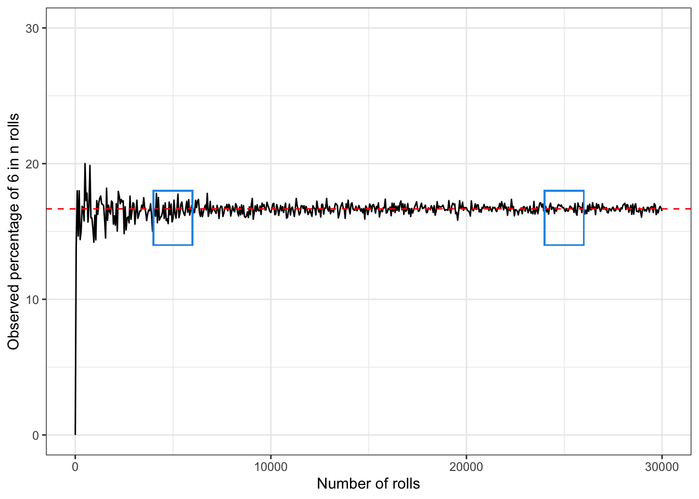

This year I was asked to give classes of statistical inference to sociology undergrats. Thier little enthusiasm in my subject forced me to find nice words explanation to most of the topics I taught them, leaving out lots of techicalities.
Suppose we are rolling a dice with 6 faces. What is the probability of obtaining 6? Anyone would answer that this is 1/6. Behind this simple answer is the heart of the (classical) definition of probability. Our mind just worked out that the possible outcomes of the roll of a dice are six and we are interested on solely one of them. We may call the outcome we are interested in success, hence the probability of obtaining six is the probability of obtaining a success. The roll of the dice is called random experiment and all the possible outcomes are the events.
Hence we may say that the probability of obtaining six is the number of successes (only one event corresponds to the number 6) divided by the number of all possible events:
\[ P(6) = \frac{\text{number of successes}}{\text{number of possible events}} = \frac{1}{6} \]
What is then the probability of obtaining a number higher than 4? Well here two are the success: either 5 or 6 and we are in the same expriment settings as before. Hence the probability will be given by:
\[ P(5,6) = \frac{\text{number of successes}}{\text{number of possible events}} = \frac{2}{6} = \frac{1}{3} \]
and so on.
The law of large numbers is feared my many. However it is extremely intuitive and it is the theorem that allows us to trust that the conclusions we make on sampled data can be valid for the whole population.
Suppose that we do not know what is the probability of observing 6 in the roll of a dice. We roll it once: we may obtain 6 or we may obtain another number. Suppose we roll it 6 times: we may observe 6 a few times, or we may obtain it none. And what if we roll it 100 times?
Well it seems natural that the more we roll the dice, the closer we’ll get to observe six 16.6% of the times.
This means that after a few rolls, for example 10 rolls, the percentage of six may be 9%, but then after 100 rolls we expect it to be closer to 16.66%, it may be 15% for example. After 10000 rolls, it is very unlikely that we observe a percentage far from 16.66%! And the more we roll the dice, the closer to 16.66% we’ll get
In general, the law of large numbers tells us that, for an increasing number of identical and independent trials the observed data will give us information that is closer to the truth. In our example, the more we roll the dice, the more the percentage of observed 6s will be close to the real value. Hence if we do not know what the real probability of obtaining 6 in the roll of a dice and we roll it 10000 times, we can trust that the observed percentage of 6s is close enough to the real value of the probability. If we cannot observe more than, for example 10 rolls, than we have to aknowledge that we cannot trust that much the observed percentage.
Thanks to the law of large numbers, we can trust the observed mean/percentage that we calculate based on a large enough sample is close enough to the rea real mean/percentage.
Let us visualise this through R with a small simulation study.
The code below shows one way to simulate the rolls of a dice \(n\) times with \(n = 50, ..., 10000\), and how to represent the percentage of 6 observed.
The red line indicates the theoretical value of the probability of obtaining \(6\). In the first blue rectangle the observed value is close to the real value but you may notice that the observations are less reliable than in the second rectangle, where the dice has been rolled around 25000 times.
require(tidyverse)
set.seed(5)
n <- c(1, seq(50, 30000, by = 50))
obs_proportion <- numeric()
res <- numeric()
for (i in 1:length(n)) {
res <- replicate(n[i], sample(1:6, size = 1))
obs_proportion[i] <- length(res[res == 6])/n[i]
}
sim <- tibble(n = n, obs_proportion = obs_proportion*100)
ggplot(data = sim, aes(x = n, y = obs_proportion))+
geom_line() + geom_hline(yintercept = 1/6*100, linetype = 2, colour = "red") +
geom_rect(aes(xmin = 4000, ymin = 0.14*100, xmax = 6000, ymax = 0.18*100), fill = NA, col = 4)+
geom_rect(aes(xmin = 24000, ymin = 0.14*100, xmax = 26000, ymax = 0.18*100), fill = NA, col = 4)+
labs(y = "Observed percentage of 6 in n rolls", x = "Number of rolls") +
scale_y_continuous(limits=c(0, 30)) +
theme_bw()